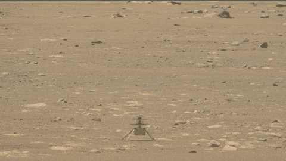
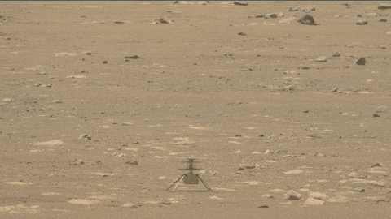
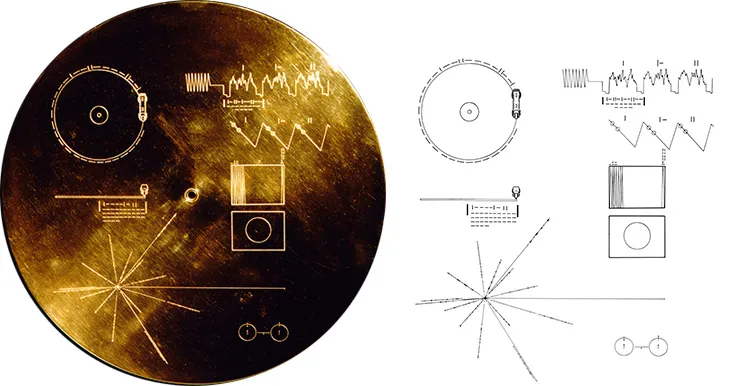
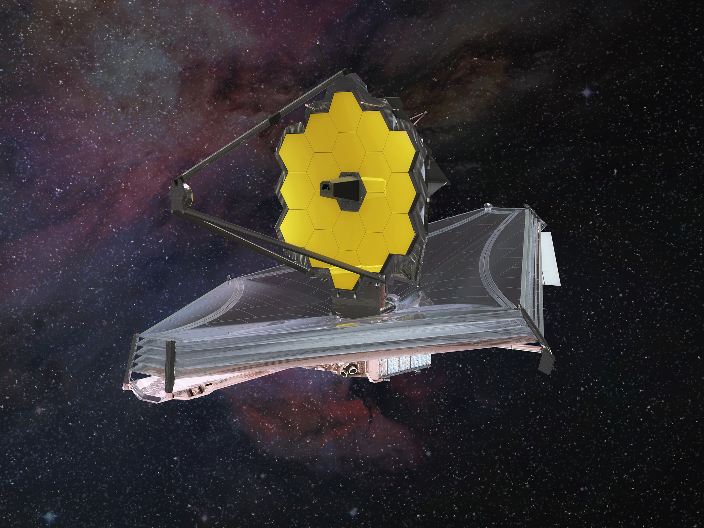

Remarkable Space Missions
International Space Station (ISS)
The ISS is a joint project of multiple space agencies and serves as a space laboratory for scientific research. It has been continuously occupied since 2000.

Space Shuttle Program
NASA's Space Shuttle program revolutionized space travel by introducing reusable spacecraft. It enabled the construction of the ISS and launched satellites like Hubble.

Mars Exploration
Missions like Curiosity, Perseverance, and Ingenuity (the Mars helicopter) have explored Mars' surface, searching for signs of past life and testing new technologies.
 


Voyager Missions
Voyager 1 and 2 have traveled beyond the Solar System, sending back invaluable data about planets and interstellar space.
Hubble Space Telescope
The Hubble Telescope has provided breathtaking images of the universe, helping scientists understand galaxies, black holes, and cosmic evolution.

James Webb Space Telescope (JWST)
Launched in 2021, JWST is the most powerful space telescope ever built, designed to look deeper into space and study the origins of galaxies and exoplanets.
